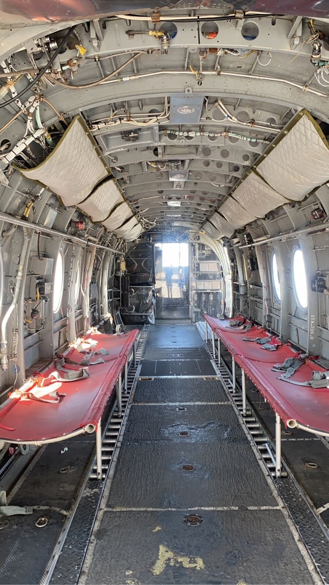
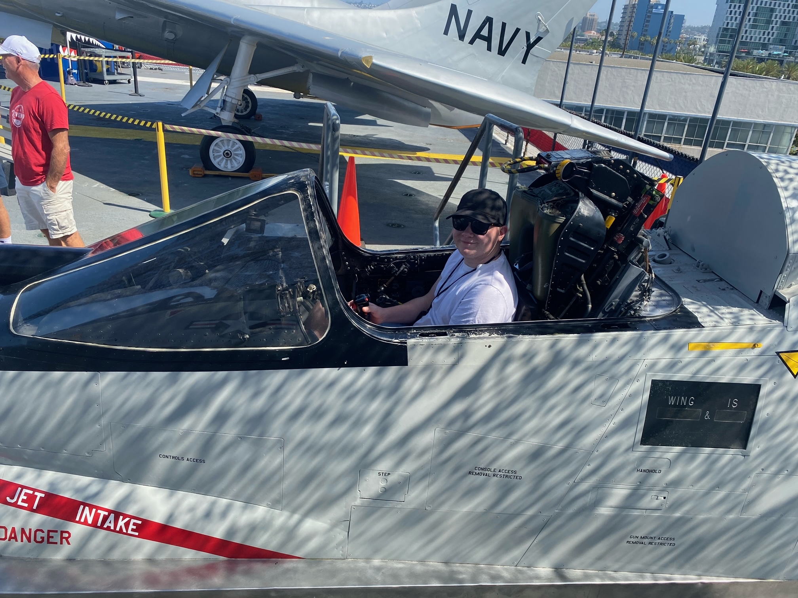

We had a clear plan this morning, to get to the USS Midway car park before 10am. We succeeded and got on the aircraft carrier as it opened. The carrier was launched in 1945 and retired in 1992. We each got an audio tour that worked really well, where you could hear stories from across the decades of the different aircraft and the rooms around the ship.
We started on the flight deck and took plenty of photos. It was a huge runway with lots of planes and helicopters.



The pilot ready rooms were surprisingly big and numerous, with lots of seats and screens. Me and Freya got split from everyone else as we walked around the lower decks. It was a maze down there and we listened to stories about crew not seeing daylight for weeks at a time. The crew quarters were very tight. No thank you!
The sickbay and the dentist area felt like torture chambers in the bowels of the ship rather than places to fix people. The officer quarters were nicer, and we learned what is involved with Angie’s next job, XO. It seems like it involves telling people off.
Our legs were tired so after a brief walk around the hangar deck, we left the ship to wander round Seaport Village. We had various snacks as we did a bit of shopping and looked at the world’s smallest lighthouse. After a slightly long drive back, the kids and Angie took Elliot to the pool and were joined by their neighbour.
A babysitter had been booked so that we could all go to the baseball game. The neighbour’s six-year old had a sleepover too, so the babysitter got more than she bargained. We drove towards the stadium and got parked up where we’d planned. We got in the ground while the game had started, but nobody seemed to mind. There were kids playing in little space, people buying food and drink and lots of general milling around.
We had great seats in the top tier, where we got our bearings and tried to understand the complexities of baseball. We were just in the sun and it was hot. Once the sun got behind the stands, it cooled down. Thankfully, we’d been given a tip to wear an extra layer.
The game progressed with not many incidents, but every time there was a lull, the screens showed fans bouncing around, or fans looking for cows in the crowd. At one point, we clapped servicemen and woman, stood up, swayed and sang a song or did a cheers motion to the camera. The crowd were instructed when to cheer and “make some noise”.
We got the full baseball experience with: home runs, loaded bases, huge food and drink options, a pitcher thrown out of the game and a Mexican Wave. Also, the San Diego Padres won. Hooray.
Another night where we were all so exhausted that we went straight to bed when got home.